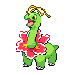

📖 英語版の図鑑説明
The fragrance of Meganium’s flower soothes and calms emotions. In battle, this Pokémon gives off more of its becalming scent to blunt the foe’s fighting spirit.
日本語訳
メガニウムの花の香りは心を落ち着かせ、穏やかにします。バトル中、このポケモンは落ち着かせる香りをより多く放ち、敵の闘志を鈍らせます。
📝 この図鑑文に出てくる英単語
| 英単語 | 意味 | 品詞 | レベル |
|---|---|---|---|
| fragrance | 香り | 名詞 | 大学 |
| soothes | なだめる | 動詞 | 大学 |
| calms | 静める | 動詞 | 高校 |
| emotions | 感情(複数形) | 名詞 | 高校 |
| becalming | 落ち着かせる | 動詞 | 大学 |
| scent | におい | 名詞 | 大学 |
| blunt | 鈍い、とがっていない | 形容詞 | 大学 |
| spirit | 霊、精神 | 名詞 | 高校 |
💡 英語名「Meganium」の由来
英語名「Meganium」は、mega-（「巨大な」を表す接頭語）がもとになっていると考えられている。ドイツ語の名前は「Meganie」で、mega（巨大な）、Geranie（ゼラニウム）から作られている。
出典 Bulbapedia
✨ メガニウムの豆知識
メガニウムはローマ字表記の日本語名と英語名がまったく同じ。そのおかげで、アニメの英語版でも日本語版の鳴き声がそのまま使われている。
出典 Bulbapedia
📊 メガニウムの種族値
HP80
こうげき82
ぼうぎょ100
とくこう83
とくぼう100
すばやさ80
合計 525
❓ よくある質問
- メガニウムの英語名は？
- メガニウムの英語名は「Meganium」です。
- メガニウムの英語名「Meganium」の由来は？
- 英語名「Meganium」は、mega-（「巨大な」を表す接頭語）がもとになっていると考えられている。ドイツ語の名前は「Meganie」で、mega（巨大な）、Geranie（ゼラニウム）から作られている。
- メガニウムは英語版の図鑑でどう説明されている？
- 「The fragrance of Meganium’s flower soothes and calms emotions. In battle, this Pokémon gives off more of its becalming scent to blunt the foe’s fighting spirit.」と書かれています。日本語にすると「メガニウムの花の香りは心を落ち着かせ、穏やかにします。バトル中、このポケモンは落ち着かせる香りをより多く放ち、敵の闘志を鈍らせます。」という意味です。
メガニウムは第2世代（ジョウト地方）のポケモンです。第2世代（ジョウト地方）の英語名一覧 →